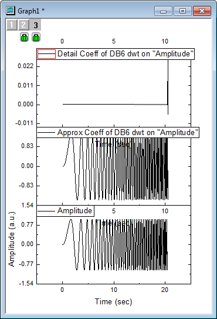
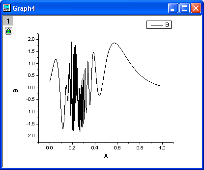

ウェーブレット
ウェーブレット
概要
ウェーブレット変換は、位相や振幅の急激な変化の信号、極大値や極小値、また関連するパラメータを分析するのに有効です。ウェーブレット変換は、時間周波数分析、特に非定常信号の分析ツールとして一般的なものになろうとしています。Originのウェーブレット変換ツールは、連続 および 離散 変換をサポートしています。
学習する項目
このチュートリアルでは、以下の項目について解説します。
- 一次元離散ウェーブレット分解を実行し、近似係数と詳細係数から信号を再構成する
- マルチレベル離散ウェーブレット分解を適用する
- 連続ウェーブレット変換を実行する
- ウェーブレット変換により信号からノイズを除去する
- 行列データに2D離散ウェーブレットを実行し、再構成する
- 画像を行列データに変換する
- 複数のグラフウィンドウを1つのグラフに統合する
1D ウェーブレット変換
分解
- 空のワークブックを開きます。ヘルプ: フォルダを開く: サンプルフォルダを選択して、サンプルフォルダを開きます。このフォルダ内のSignal ProcessingサブフォルダにあるChirp Signal.dat ファイルを探します。空のワークシートにファイルをドラッグアンドドロップしてインポートします。
- B列を選択して、解析：信号処理：ウェーブレット：分解 を選択し、分解：dwtダイアログを開きます。
- ダイアログでは、ウェーブレットの種類と次数にDB6を選択し、拡張モードにゼロパディングを指定します。
- OKをクリックしてダイアログを閉じ、近似係数と詳細係数を出力します。
- B、C、D列（C列とD列は近似係数と詳細係数をそれぞれ含んでいる必要があります）を選択します。メニューから作図：基本の2Dグラフ：積み上げ...を選択して積み上げ： plotstackダイアログボックスを開きます。
- 開いたダイアログで、オプションの項目のリンクのチェックを外します。ダイアログの自動プレビューチェックボックスにチェックを付け、右パネルでプレビューできるようにします。
- OK をクリックしてダイアログボックスを閉じ、積み上げグラフを作成します。
- 
Note:2（3、4...）次元の離散ウェーブレット分解を行うには、ステップ2から4の操作を、近似係数（ここではC列）に対して繰り返します。また、OriginProでのみ利用可能なマルチスケールウェーブレット分解は以下のセクションでご紹介します。
再構成
再構成は、分解の逆演算で、このサンプルでは、上記のセクションで生成された結果から再構成を行います。
- 上のセクションで得られた結果のC、D列（近似係数と詳細係数）を選択します。
- メニューから解析：信号処理：ウェーブレット：再構成を選択して再構成：idwtダイアログを開きます。
- 信号の再構成を実行するには、ウェーブレットの種類や境界を同じものに設定する必要があるので、DB6とゼロパディングを選択します。
- OKボタンをクリックすると、再構成された信号データが列Eに出力されます。
- CTRLキーを押しながら列Bと列Eを選択します。メニューから作図：基本の2Dグラフ：折れ線を選択してこれら2列のグラフを作成します。
- 作図されたグラフから、元の信号と再構成された信号データが重なり合っていることがわかります。
Multi-Scaleウェーブレット分解
- 新しいワークブックを作成し、上述の分解セクションで使用したデータと同じものをインポートします。
- B列を選択して、解析：信号処理：ウェーブレット：マルチスケールDWT を選択し、マルチスケールDWT：mdwtダイアログを開きます。
- 拡張モードをゼロパディングにし、分解レベルを3に変更します。複数係数データのコンテキストメニューから、[<入力>]<入力>を選択します。
- OKをクリックして、レベル3の離散ウェーブレットを実行すると、係数が元データと同じワークシートに格納されます。
- ワークシート内の全ての列を選択し、メニューから作図：基本の2Dグラフ：積み上げ...を選択して積み上げ： plotstackダイアログボックスを開きます。ダイアログテーマの右にある矢印ボタンをクリックし、システムデフォルトを選択します。グラフをプレビューするために、ダイアログの下側にある、自動プレビューにチェックを付けます。
- OKをクリックします。作図された結果グラフは以下のようになります。

連続ウェーブレット変換
- 空のA列とB列を持つ新しいワークシートを作成します。
- 列Aを選択して右クリックし、ショートカットメニューから、列値の設定を選択します。値の設定ダイアログボックスを開きます。テキストボックスに"data(0, 1, 1/1023)" と入力し、適用をクリックします。A列に値が入力されます。
-
- >>ボタンをクリックして、B列の値の設定を行います。テキストボックスに、"sin(1.5/(0.25-col(A)))+cos(0.2/(0.2-col(A)))" と入力してOKボタンをクリックします。
-
- 生成したデータを確認するためにグラフを作図すると下図のようになります。列Bが選択された状態で、 メニューから作図：基本の2Dグラフ：折れ線を選択します。
- 
- ワークシートをアクティブにして、メニューの列：新規列の追加...を選択してワークシートに新しい列を追加します。開いたダイアログで、デフォルトの1のまま、OKボタンをクリックします。
-
- 新たな列（C列）がワークシートに追加されました。このC列を選択し、ショートカットメニューから、列値の設定を選択します。 テキストボックスに、スクリプト "data(1, 512)" を入力してOKボタンをクリックします。
-

- 列Bと列Cを選択し、メニューから 解析：信号処理：ウェーブレット：連続ウェーブレットを選択して連続ウェーブレット：cwtダイアログボックスを開きます。
- ダイアログで、ウェーブレットの種類をMexHatにし、係数行列にチェックをつけます。
-
- OKボタンをクリックして、ダイアログを閉じます。
- 新しいワークシートと行列に係数が出力され、さらに等高線図も作図されます。グラフをダブルクリックして、作図の詳細ダイアログを開きます。右パネルのカラーマップタブで、色塗りヘッダをクリックして塗り方ダイアログを開きます。パレットをロードを選択して、パレットを選択ボタンを押し、Pumpkin Patch を選択します。OKをクリックし、作図の詳細ダイアログを開きます。
-
- OKをクリックするとグラフの配色が変更され、グラフは下図のようになります。
-
ウェーブレット変換によるノイズ除去
- 新しいワークブックを用意します。ヘルプ: フォルダを開く: サンプルフォルダを選択して、サンプルフォルダを開きます。このフォルダ内のSignal ProcessingサブフォルダにあるSignal with Shot Noise.dat ファイルを探します。空のワークシートにファイルをドラッグアンドドロップしてインポートします。
-
- 上図のようにスパークラインが表示され、この信号データにはノイズが含まれていることが分かります。B列を選択して、解析：信号処理：ウェーブレット：雑音除去 を選択し、雑音除去：wtdenoiseダイアログを開きます。
- ダイアログの自動プレビューチェックボックスにチェックを付け、右パネルでプレビューできるようにします。ウェーブレットの種類をDB9にし、拡張モードをゼロパディングに、しきい値の種類をsqtwolog,にして、しきい値のレベルを7に設定します。
-
- OKボタンをクリックして、信号からノイズを除去し、ワークシートのC、D列に結果が出力されます。
-
- ワークシートのすべての列を選択して、メニューから作図：基本の2Dグラフ：折れ線と選択して元データと結果データのグラフを作図します。グラフは以下のようになり、ノイズが除去されたことがわかります。
-

2D ウェーブレット変換
2D ウェーブレット分解
- 新しい行列ブックを開きます。新しい行列ブックを用意し、メインメニューからデータ：ファイルからインポート：イメージファイルを行列へインポートを選択し、<Originのインストールフォルダ>\Samples\Image Processing and Analysis\myocyte1.tif を選択し、インポートします。
-

- 最初に、イメージをデータに変換する必要があります。そのためには、メニューのイメージ：変換：データに変換を選択します。データに変換: img2mダイアログを開きます。種類をbyte(1)に設定します。
-
- OKをクリックして、行列データの変換を実行します。
- 変換された行列データをアクティブにし、メニューから解析：信号処理：ウェーブレット：2D 分解を選択して2D分解：dwt2 ダイアログを開きます。
-
- 初期設定のまま、OKボタンをクリックします。行列データに対して2Dウェーブレット分解を実行します。4つの行列シート(CA, CH, CV, and CD)をもつ行列ブックが生成されます。CA, CH, CV, CDは 近似係数、詳細係数 (水平)、詳細係数 (垂直)、詳細係数 (対角)に対応しています。メニューの表示：イメージモードを選択して表示モードをイメージに変更できます。
-

- Caシートをアクティブにして、メニューから作図：等高線図：イメージプロットを選択してイメージプロットを作成します。作図：等高線図：イメージプロットを選択してイメージプロットを作成します。同様に、CH,CV,CDシートについてもグラフを作成します。
- グラフをダブルクリックして開く作図の詳細で、左パネルでLayer1をアクティブにし、右パネルのレイヤの大きさ・描画スピードタブを開き、行列データ、次元あたりの最大ポイント数のチェックを外します。OK ボタンをクリックします。そして、グラフの軸関連オブジェクト（軸ラベルを含む）を選択し、Deleteキーをおして削除します。全てのグラフでこの操作を行います。